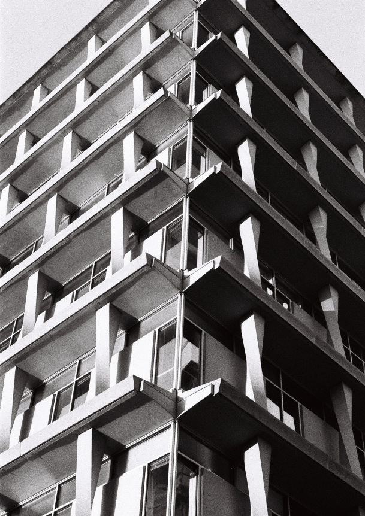

analog après-midi: usa
FUERA GRINGOS
Santurce, San Juan, Puerto Rico
San Juan is full of interesting graffiti. I noticed this interesting orange blob near one of the main highways from our car, and went out to take a photo of it later. On closer inspection (and google translate) the text in the top left, "fuera gringos" roughly translates to "out, foreigners." The irony of taking a photo of the graffiti, laughing about it, and then posting it to my photography site isn't lost on me.
Puente dos Hermanos
Puente dos Hermanos, Condado, Puerto Rico
It was rainy for most of our Puerto Rico trip until our last day when the clouds finally cleared up. The Puente dos Hermanos is one of three main bridges connecting the urban sprawl of the majority of San Juan to the historic district of Old San Juan. While San Juan itself (especially Santurce) is mostly residential in nature, Old San Juan is dominated by cruise terminals, hotel complexes, and tourist traps.
Ashford Ave, Condado, Puerto Rico
Side of an abandoned hotel near Condado beach. I took this photo while on the way to Old San Juan. Ashford Ave is filled with the most upscale hotels in the city, so this building felt extra out of place.
Four walls
Aibonito, Puerto Rico
Abandoned structure in a really small town along the Puerto Rico scenic route. Visited with my family after I finished my spring semester. Unfortunately, it rained nearly every day we were there which is why all my photos look a bit dark and gloomy. All of PR had some really interesting graffiti that kept drawing my attention no matter where I went. Aibonito is along the PR scenic route that passes through the inland, mountainous region of the island. Our rental car got a bit damaged, with some metal parts underneath the front bumper scraping against the road as we drove. As fire became a real concern, we jacked the car up on the side of road with the help of a kind stranger and ripped the piece out (but saved it to return to Hertz). As we stopped to eat and look around, it started pouring again, flooding the road as we drove down the mountain.
Air force museum entrance
Dayton, Ohio
Entrance to the national air force museum. Apparently, it's the oldest and largest aviation museum in the world - and it's certainly super impressive. I visited after participating in the Air Force Research Lab's SDR challenge, where my team presented a demo of SDR ranging using phase information. There are some really remarkable exhibits there, like some presidential airplanes, record setting experimental planes, and many, many fighter jets. It really makes you think about the American capacity for building insane feats of engineering in insanely short periods of time; I don't think this capacity still exists today.
GSMR
Bryson City, NC
Great smoky mountain railroad train at the terminus at Bryson City. The train takes a slow path on the southern edge of Great Smoky Mountains National Park. I visited with my family for spring break. It was a great time and the views are definitely worth it. We were in an open-air car that made the sounds and scenery much more immersive.
Cherry blossom festival
Macon, GA
My friends and I visited Macon for the "International Cherry Blossom Festival" which maybe didn't completely live up to its name. Classic false advertising flaunts 350k cherry trees without mentioning that those trees are spread out through the entire county. Really only one street (3rd street) had blossoms rivaling japan, which is where I took this photo. We also visited Mercer (a women's methodist university), which has an admittedly cute campus and lake behind it.
Diesel (since 1935)
Macon, GA
There's something uniquely american and aesthetically amusing about abandoned gas stations.
Emory medicine 2
Emory university, atlanta
Emory medicine
Emory university, atlanta
Emory hospital
Emory university, atlanta
While I think emory's campus is in general pretty boring, their school of medicine, hospital, and CDC-adjacent areas are undeniably cool.
NO COP CITY
Atlanta (east side)
Cop city is a police training area being built in southeast atlanta (apr 2024, it might be built by the time you're reading this). I think feelings against cop city are particularly intense because it brings up two issues that liberal atlanta residents get really angry about: police militarization and brutality, and deforestation/urban sprawl.
AT&T
Atlanta
Weird triple exposure
VENDING IS NOT ALLOWED
downtown atlanta, centennial olympic park
They're definitely vending out there...
parking garage
downtown atlanta
Northern edge of downtown near the tangle of highways
Koan
Georgia tech, atlanta
My first photo taken on campus. The campus was empty because it was still during winter break. On the left is the Van Leer electrical engineering building with a cool antenna on top, and behind the sculpture is the Hive makerspace. This sculputure seems to get a bit of dislike because it might seem a little boring, but I've always liked how sunlight and shadow mix on the curving surfaces.
International Calls
Miami beach
Espanola Way
Miami beach, espanola way
Taken while walking between the beach and a cuban coffee joint (Cortadito). Immediately to the left is Espanola Way, a famous street lined with bars and restaurants. I was torn between including the DETOUR sign and the Espanola Way street sign but I was forced to take the photo when the guy with the heart shirt walked up, I thought it was a nice match with the bright reds in the rest of the photo.
Miami, south beach area
Well timed snap. I liked the shadow of the palm tree a lot.
ICE CREAM
Miami, wynwood
The Smorgasbord near Wynwood Walls, the street art exhibit in northern miami. Miami is well known as a street art center, and the entire wynwood area is bursting with color everywhere you look -- it's not hard to take a good photo.
XTRA LIQUORS
Miami, downtown
Probably my favorite photo I took while I was in miami for two days. I like everything about this photo: the rental bike stands all empty, the guy staring off left, the kinda run-down liquor store, and the palm tree that instantly contextualizes the photo. This scene seemed like pure miami to me.
Miami, downtown
Random spot in downtown miami that I thought looked cool
MiamiCentral
Miami
Miamicentral station near downtown miami. I rode the brightline on Dec 31st from orlando airport station to miamicentral with my sister to meet cousins for new year's. I was really happy to get to ride it not even half a year since service began to MCO...it's still absolutely crazy that my hometown is the one place in the entire USA that gets reasonably fast trains outside the northeast-corridor -- I think that the main reason it's here is tourism, there aren't very many places like florida where three cities (tampa, orlando, miami) get this much tourism and are so close together. In any case, I was really impressed with both the terminal stations and the train itself... the seats were very comfortable and the whole experience was better than an airplane in pretty much every way. When I rode the train, the windows were covered in advertising wrap, ruining the view from the inside, but I've read that they're planning to remove it soon.

Graffiti prohibited
Krog street
What could they possibly have been expecting here... krog street is a center for street art, there's bound to be some collateral damage.

Krog street
I just love this wall painting, and the run down car kind of being stared at amused me a lot.
Neon
atlanta, Dekalb ave, near inman park station.

atlanta, georgia state
Just before entering the underpass that the entrance to georgia state station is in. I saw this man with an incredibly striking blue suit get out of his car, and the parking meter just happened to be in front of the waffle house. Waffle house is a recurring subject in my photos (only that I don't post them all) for some odd reason, it's this iconic southern restaurant that has a immediate emotional connection for me -- one too many nights spent with a chocolate waffle.
Intersection
atlanta, five points
The only photo i took on this roll that i wish was in color. the graffiti opposing this intesection is super colorful. the geometric composition of this shot, especially the way it seems so spacious stood out to me so much i waited until something interesting happened; i think the boy crossing the road completes this nicely.

atlanta, five points
The MLK Jr federal building of the Sam Nunn federal center. The building is beautiful, impressive and so very majestic yet in shambles and is completely falling apart. Much like the USA itself. I love the way the light ripples across the building in this photo.

Constitution building
atlanta, five points
I found it crazy that there was such a dilapadated building right in the middle of the center of the city, five points. This whole area was a little trippy to walk around with so many abandoned restaurants and structures. In frame is the marta five points subway station, where the N-S and E-W lines intersect. Also, the Atlanta Constitution building, built in 1947.

Downtown, from a construction site
atlanta, downtown, below the benz stadium
A view of the downtown skyline from a construction site in the parking area below the mercedes benz stadium. Right ahead of the construction are the southbound norfolksouthern lines.

GWCC
atlanta, GWCC/state farm arena
This whole area of downtown feels so odd to walk around when there isn't an event at one of the stadiums or convention centers going on. All the roads and paths are so wide but there's not a soul around.
Skyview
atlanta, centennial olympic park
I prefer this off-angle shot of the ferris wheel with the centennial tower in the background more than the view of the ferris wheel straight on. I like the way the wheel is compressed here, and it takes up the gap between the two buildings in a somewhat satisfying way. This is taken from the parking lot, and the things in the bottom right are solar panels.

atlanta, downtown
I like the texture of this photo a lot. it was something i tried to think about more while shooting this roll to try to still come up with interesting photos even without color, which i usually rely on heavily.
Sprint St NW crossing I85
Seen while walking downtown from georgia tech in midtown
E3
atlanta
Marta station E3. first roll in black and white ever.

New orleans, near the amtrak station
Parking lot near the nola amtrak station

Walgreens
New orleans, CBD

the rel amburge
florida, off I-10 between gainesville and tallahassee
road trip with my sister from gainesville to new orleans

YOUR AD HERE
atlanta, Marietta St NW, next to CSX/NS lines to the yards
Cool mural with the BofA plaza in the background. Taken while walking north from the centennial olympic park back to georgia tech along the railroad lines. After eating at max's pizza with my friend from high school!
CSX, westbound
atlanta, Inman park/Reynoldstown
CSX train headed west on the tracks that run parallel to the MARTA near inman park station.

Guitar
atlanta, little 5 points
Guy with a guitar in front of the euclid ave yacht club